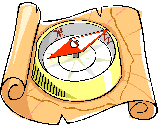

|
|
|
- evolve a high-nurturance family |
|
 |
Draft a
Family
Mission or Vision Statement - and
Use it!
What do you want to
do with your
family?
By Peter K.
Gerlach, MSW
Member NSRC Experts Council
|

 The Web
address of this article is http://sfhelp.org/fam/mission.htm The Web
address of this article is http://sfhelp.org/fam/mission.htm
Updated
03-21-2015
Clicking underlined links
here will open a new window. Other links will open an informational
popup, so please turn off your browser's popup blocker or allow popups from
this nonprofit Web site. If your playback device doesn't support Javascript,
the popups may not display. Follow
underlined links after finishing this article to avoid getting
lost.
This is one of a series of articles on evolving and
enjoying
families (Lesson 5). The series exists because the wide
range of current social problems suggests that
most families don't
fill the primary needs of (nurture) their members very well.
That suggests the epidemic
of the lethal [wounds + unawareness]
proposed in this educational Web site .
This article explores...
-
what is a mission
or vision statement, and why make one?
-
a
status check to help you identify your attitude about
doing this,
-
typical
steps toward making an effective family mission statement
for (a) any family and (b) typical divorcing families and stepfamilies,
-
a
sample
family mission statement.
The article assumes you're familiar with...
 What is a Mission Statement?
What is a Mission Statement?
It is a brief, thoughtful declaration of what a person, program, or
organization exists for. Some people prefer vision statement which
focuses on a long-term dream or goal. Examples...
-
("This is what I'm trying to
achieve with my life and what I stand for")
-
marital vows -
declarations of partnership values and long-term goals; .
-
family statements - what
the leaders of a family are dedicated to accomplishing over time; and..
-
corporate charters -
what the leaders of an organization stand for, and why their
organization exists.
Do you have one or
more of
these now? Do you use them to guide you in complex situations?
Why Make a
Family
Mission Statement?
Family adults (like you) who want to feel in old age that they've
succeeded
as persons, mates, and nurturers must want to agree early
in their family's development cycle on what they're trying to
achieve long term. The
popular alternative is living reactively a
week or two at a time with no long-term
goals or plans on how to attain them.
|
The probable result is realizing in late middle age that your
life and/or family has not produced the results that
your younger self longed for. A cultural norm is to steadily focus on short-term
gratification, experience major regrets and problems in old age,
and silently this attitude in the next generation.
Do you agree? |
Not living from thoughtful personal and
family mission statements is like gathering your kids and relatives
on a houseboat and departing on a world cruise without a destination in
mind, a map, a compass, a radio, and appropriate supplies.
What is an
Effective
Family
Mission Statement?
It is one that...
-
defines values and priorities
that keeps you focused and motivated through confusing
or chaotic situations, and it...
-
helps group-members clarify
and progress on their personal mission statements; and it...
-
helps people achieve key
long-term group goals they set out at the beginning, which fosters old-age
satisfaction and contentment.
An effective statement is one
your family members spontaneously quote and refer to, rather than a document
gathering dust in a drawer or file-folder.
Reflect - how would your parents and grandparents have reacted to what you
just read? Did they have a clear idea of
what they wanted their family to achieve across their years? Did they live
reactively or proactively?
 Status Check
Status Check
Picture all the people you call "my
family" in a group now, looking at you. Imagine one of them asking
"Do you want us to make and use personal and family mission
statements?"
Before
answering, consider
this
and imagine your family making and using one like it to help you all make
important decisions together. Then...
Reflect, and answer the question
above out loud. If
you say "No," "Not now," or "I don't care," then quit reading this article and
continue living as you always have.
Options:
• wonder what you'll
feel in old age about your answer,
•
rank the nurturance level of your
family (low > moderate high), and...
•
decide
this question -
your
or some other well-intentioned
If your answer is something like "I
don't know," or "I'm not sure," read the rest of this article and then reconsider the question above to see if anything has changed.
Learn something about yourself with
this 1-question anonymous
How to Make an Effective Family Mission Statement
These suggestions are for (a) all families and for (b) typical courting or committed
stepfamilies.
 Options for All
Couples and Families Options for All
Couples and Families
Premise - The best time to draft partnership and family mission statements
is during courtship. The next best time is as soon as practical after that.
1) Family leaders help other
members to get clear on your family's
developmental stages over one
generation, and to maintain a long-range outlook. "Long range" means the
several decades it will take to complete your generational cycle. The
common risky alternative is adults focusing on resolving short-range problems
and letting "the future take care of itself";
2) Family adults discuss and agree on why families exist,
and what it takes to be a
(healthy, functional) family over time;
3) Family adults learn about and discuss the [wounds + unawareness]
and these related
Discuss honestly if and how
the cycle and hazards has affected your family tree so far.
4) Evaluate (a) whether
some or all your present family adults are
(GWCs), and (b) if so, what that has
to you all.
5) Each wounded adult commit to progressing at
self-improvement
over time - i.e. commit to...
-
having their true Selves
them in all situations, and
any inherited psychological
and as you do...
-
clarify and affirm your
on
earth, and patiently enjoy overcoming obstacles as you pursue it
within your limits. As you adults each do this...
6) Family members agree together...
-
who
(belongs to)
your family now;
-
what normal
kids and
need in order to develop their full potential, long term;
-
how to
measure your family's
-
who among you - specifically - is responsible
for...
-
setting long-term family goals,
policies, and
plans;
-
negotiating and managing family
(responsibilities),
-
implementing the policies and monitoring
progress over time;
-
managing major
family changes, and...
-
resolving family
problems as they arise.
Recall - we're reviewing adults' options for creating an effective family
mission statement.
7) Clarify
and discuss your family's impact on the local and global environment, and
your responsibility as members of our "global village." Then discuss
whether it's appropriate to include that responsibility in your family
mission statement.
8) Agree on...
-
what an effective
vision or
mission statement is,
-
what you adults want to feel about your family
accomplishments when you're present adults are old, and...
-
evolve a
mission statement that fits you as a unique multi-generational family. Then...
9) For more perspective, search the Web for other ideas on
"family mission statements" and integrate what you find into these
suggestions.
10) Use
your statement as teammates
to guide you all in...
-
negotiating effective "job (role) descriptions"
(responsibilities) for
each of your family members, and...
-
navigating stressful situations and
important family changes and other major decisions. Finally...
11) Periodically discuss - e.g. at
holiday gatherings or
reunions -
whether your mission statement is providing helpful guidance and
inspiration
well enough, Amend it as needed as your family matures and the
environment changes across your years.
Do these steps seem useful and practical? can you imagine your family adults
discussing and acting on them together? When any family kids are
middle-aged, what would your elders like to hear from them about your stance on these
steps when the kids were young?
Try interviewing your Future Self for
some wise advice about making a family mission statement.
If you're not in a courting or committed
and you don't expect to be, go here.
Extra Options for Typical Stepfamilies
Typical
families and stepfamilies are
intact biofamilies in some ways, and
different in many other
ways at the same time. These differences merit extra steps in devising and
using an effective family mission statement. In addition to the steps above,
do an appropriate version of these:
12) During or
soon after courtship...
13) Do
self-improvement
together, and
use it together to develop your unique multi-generational stepfamily.
14) With your version of these factors in mind, discuss
these extra developmental phases that
your stepfamily must master across your years, compared to average intact
biofamilies.
15) Now all you adults agree on...
-
what an effective
vision or
mission statement is,
-
what you all want to feel about your stepfamily's
accomplishments when you're all old, and...
-
evolve a
mission statement
that fits you as a unique multi-generational family.
+ + +
Do these steps seem useful and practical? can you imagine
your family adults learning, tailoring, and acting on them together? When
any family kids are middle-aged, what would you elders like to hear
from them about your stance on these steps when the kids were young?
To make these abstract ideas more concrete, meditate on this...
Example
Before looking
at factors that determine how well a family mission statement works, study the
sample (bio)family charter below. It's from the "Personal Leadership Application
Workbook" for Stephen Covey’s helpful paperback "The Seven Habits of
Highly Effective People":
|
"The mission of our family is ...
to create a
nurturing place of order, truth,
love, happiness, and relaxation; and...
to provide opportunities for each person
to become responsibly independent, and effectively interdependent, ...
in order to achieve worthwhile purposes.
Our Family Mission
To love each other...
To help each other...
To believe in each other ...
To wisely use our time, talents, and resources to bless others ...
To worship together ...
Forever."
|
This
brief charter says a lot.
It states unmistakably what the leaders of this family want to do.
What
would it feel like to live in a family who's leaders really followed these ideas?
Would a charter like this work as well for a
divorcing family or a
as an
intact biofamily? Where did the
co-authors of this declaration start? I suspect they began with...
-
A shared high-priority need or dream to
intentionally fashion a "good life" for themselves and their children. I further
suspect they...
-
felt responsible for making this dream happen,
rather than assuming that it would occur "some-how." Finally, the
authors seem to have...
-
spent a lot of time thinking and talking about
specifically what comprises the "good life" they wanted to co-create over time.
Do you agree? Can
you imagine what your family adults' version of this would look and feel like?
I suspect you and any mate and
relatives have an unspoken (semi-conscious) policy already...
Notice your feelings and
now.
Are you curious, interested, and energized
about making a vision statement, or are
feeling skeptical, resistant, or indifferent? The latter
suggests you're
dominated by well-meaning
Drafting a family vision statement is only half of the project. The other half
is...
Some usage options apply to all families, and some are
specially useful for typical divorcing families and stepfamilies.
All
Families
Draft your own declaration together, rather than adopting someone
else's. You're far more apt to respect your own heart-values and shared goals than those of
other authors, no matter how venerated or articulate. Even changing, adding, or deleting
several words can make someone else's inspiring words more yours.
Consider incorporating key elements of your statement into any commitment
vows your couples make;
If you invite new people into your homes or families, invite
them to read and discuss your mission statement as a way of getting to know
each other better;
Display your statement
where residents and visitors to
your home will see it when they enter or socialize together. The alternative is probably
"out of sight, out of mind."
Review your charter as a couple and a family regularly,
like at
anniversaries, reunions, celebrations, or January 1. And as you do with legal wills and insurance policies,
authorize your Selves to revise earlier drafts as the environment and you
all age and change.
Read your mission statement out loud when you
encounter serious role and relationship conflicts. This can refresh your focus and grounding in turbulent times. It can also lead to important revisions.
Use your mission statement as
a foundation for...
-
negotiating new family
or
upgrading old ones;
-
guiding the resolution of
major crises and dilemmas among two or more family members or other
people; and...
-
negotiating and applying clear family
for each of your adults and kids; and...
-
celebrating your family
strengths, milestones, and achievements along the way!
Options for Divorcing
Families
Divorce reorganizes a family, it doesn't end it. Legal divorce affects most current American families.
The multi-year
can cause significant confusion and conflict about who's included in the
family, and who is responsible for what. The answer determines whom a family mission statement applies
to. Typical kids believe both divorced bioparents and their respective
ancestors are "my family," even if parents live apart and some kin "aren't
speaking." Kids and adults each determine who's included (or not) depending
on...
-
the degree of
(low to high),
-
their personalities and
histories, and...
-
the quality of family
relationships (toxic to nurturing).
If divorces are respectful
and low-conflict, the two-home family's nurturing ability may be only mildly
degraded. This is most likely if
both mates and their ancestors have minimal psychological
The average case is moderate to high divorce bitterness and conflict,
lasting for several to many years. Where resentments, hostility, and
distrust are high, mission statements may be drafted and observed by one
mate and offered to the other and their relatives.
Whether separated or divorced, relatives affect how well each person's local
and long-term needs are met across their lives. This is specially true at
communions, marriages, births, baptisms, bas or bar mitzvahs, graduations,
birthdays, holidays, major anniversaries, divorces, and deaths.
A danger in both ex mates not cooperating on this is their kids' being
confused by shuttling between homes that have significantly different
values and goals. This promotes stressful loyalty and values
conflicts and relationship triangles
in
and between all family homes, weakens family bonding, and nourishes the
lethal [wounds + unawareness]
The challenge to divorcing-family adults is to transcend local relationship
conflict and grief, keep a long-range view, and agree on common long-range
nurturance goals. Note the option of making a
vision statement for achieving a
successful divorce!
Options
for Typical Stepfamilies
Though stepfamilies and intact biofamilies are
in a number of ways, typical
stepfamilies have unique
developmental stages and
adjustment tasks to factor into your vision
statement.
Invest several months during
courtship working on
to gain accurate perspective on
and what you're committing to do together. Invite kin, in-laws, and older
kids to participate.
Integrate your mission-statement in your
commitment ceremony -
specially if you've involved your kids and their other co-parents
in drafting it. This can strengthen your union and your
multi-generational stepfamily, and encourage healthy bonding and
loyalties. Declaring your stepfamily goals publicly before God, your
kids, and key friends and relatives, can impart special meaning to your
statement that can amplify its usefulness across your years.
Offer a copy of your vision statement to your
kids'
other co-parent/s. Ideally you'll invite them to
help draft it, because it will affect them. Because of post-divorce and/or new
re/marital
this is
often not feasible.
If the
language of your statement specifically includes honoring the needs, feelings, and
rights
of your other family members they may be more receptive to it, long-term. They may also draft their
own statement. All your adults and kids should at least be aware of these
statements and what they mean. There may be value in giving a copy to your kids’ grandparents and
other key relatives, too.
Avoid
that all stepfamily members follow your stated goals or adopt the values
in your declaration. Evolve a statement that
(a) acknowledges the differences among you several biofamilies, and (b) acts like a
guiding keel for your stepfamily ship rather than a confining, narrow channel.
Recap
This
article summarizes...
-
what a family mission
or vision statement is, and why make one;
-
a
status check to discover your attitude about
doing this,
-
typical
steps toward making a family mission statement
for (a) any family and (b) typical divorcing families and stepfamilies,
-
a
sample family mission statement,
and..
-
suggestions for using
your statement.
Pause, breathe, and reflect - why did you read this article? Did you get
what you needed? If not, what
you need? Who's
these questions - your
or
 Prior page /
Lesson 5 /
Print page
Prior page /
Lesson 5 /
Print page
site
intro /
course outline
/
site search /
definitions / chat
/ contact
|